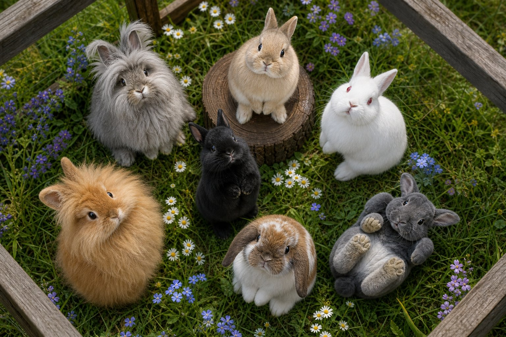
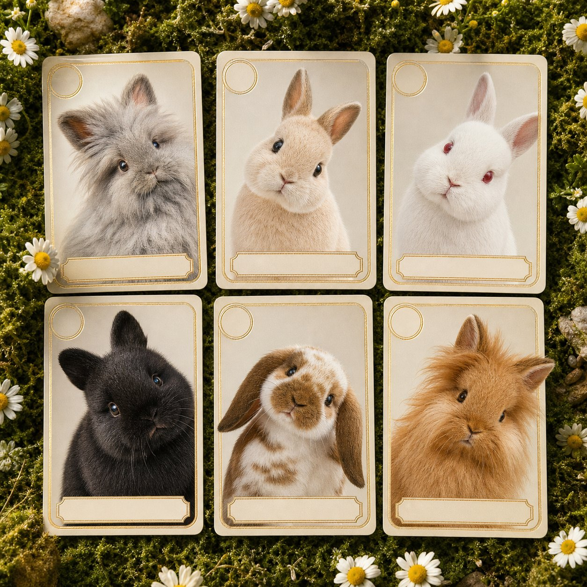
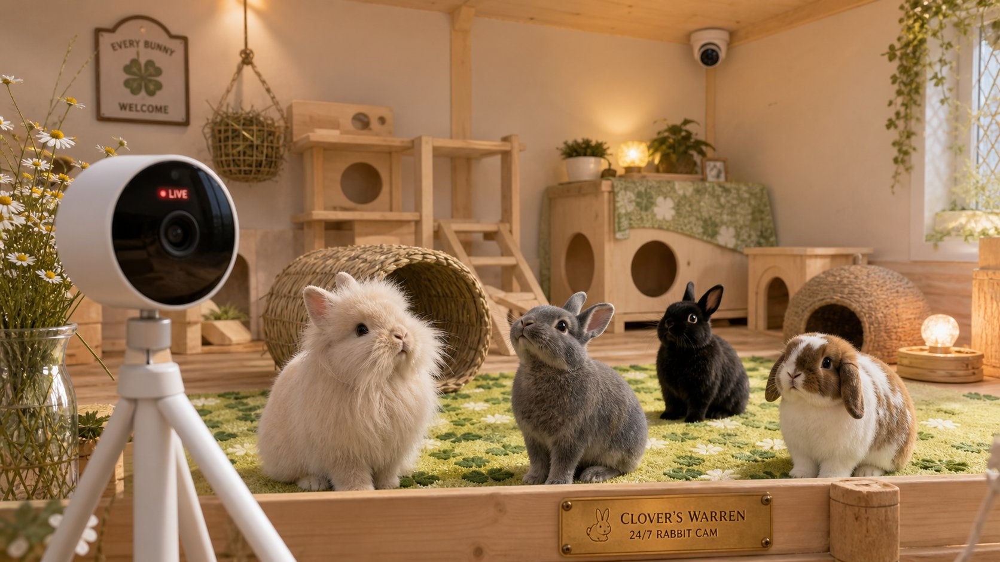
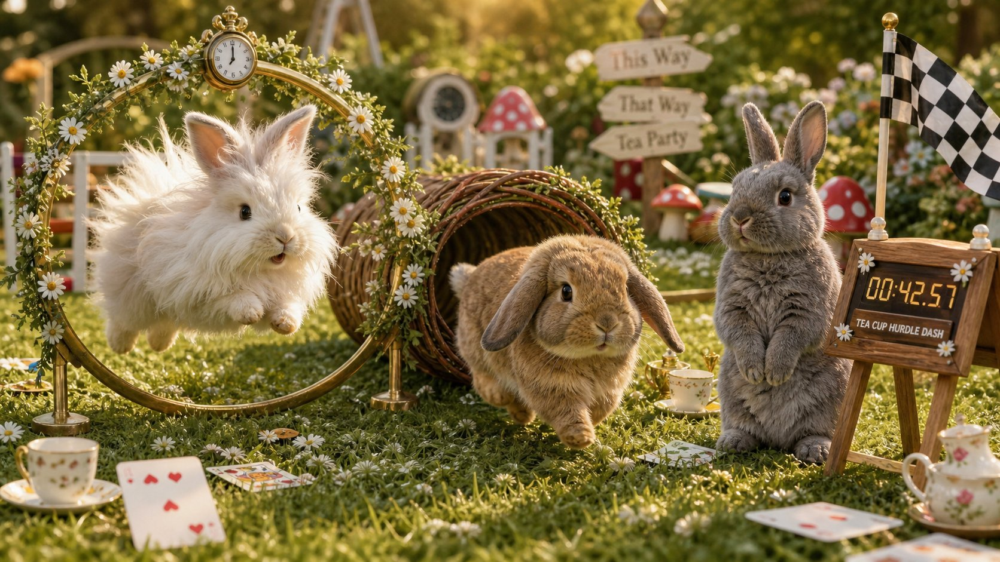
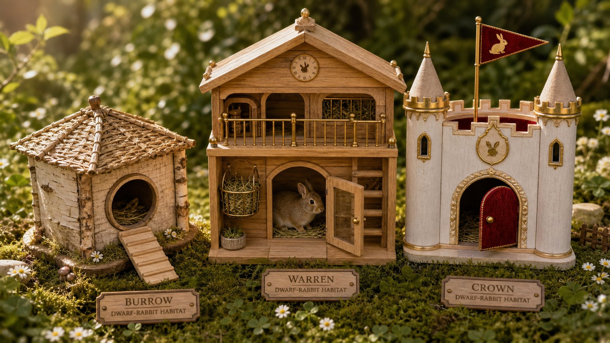
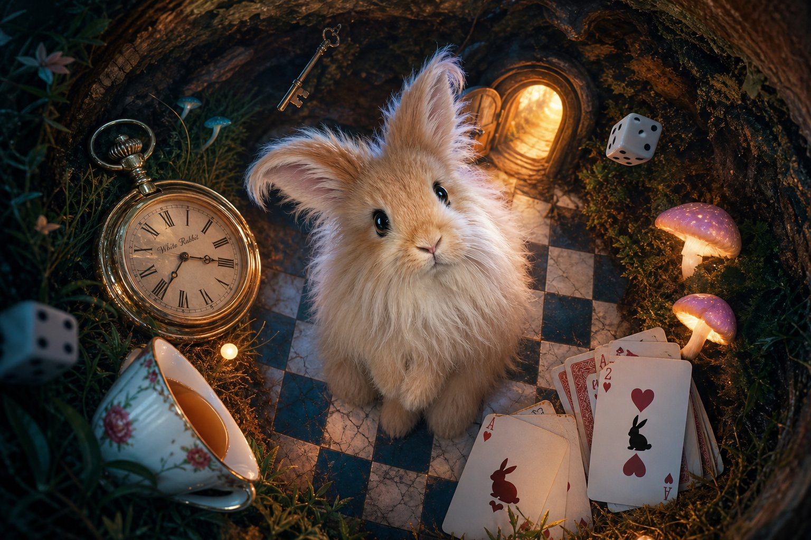
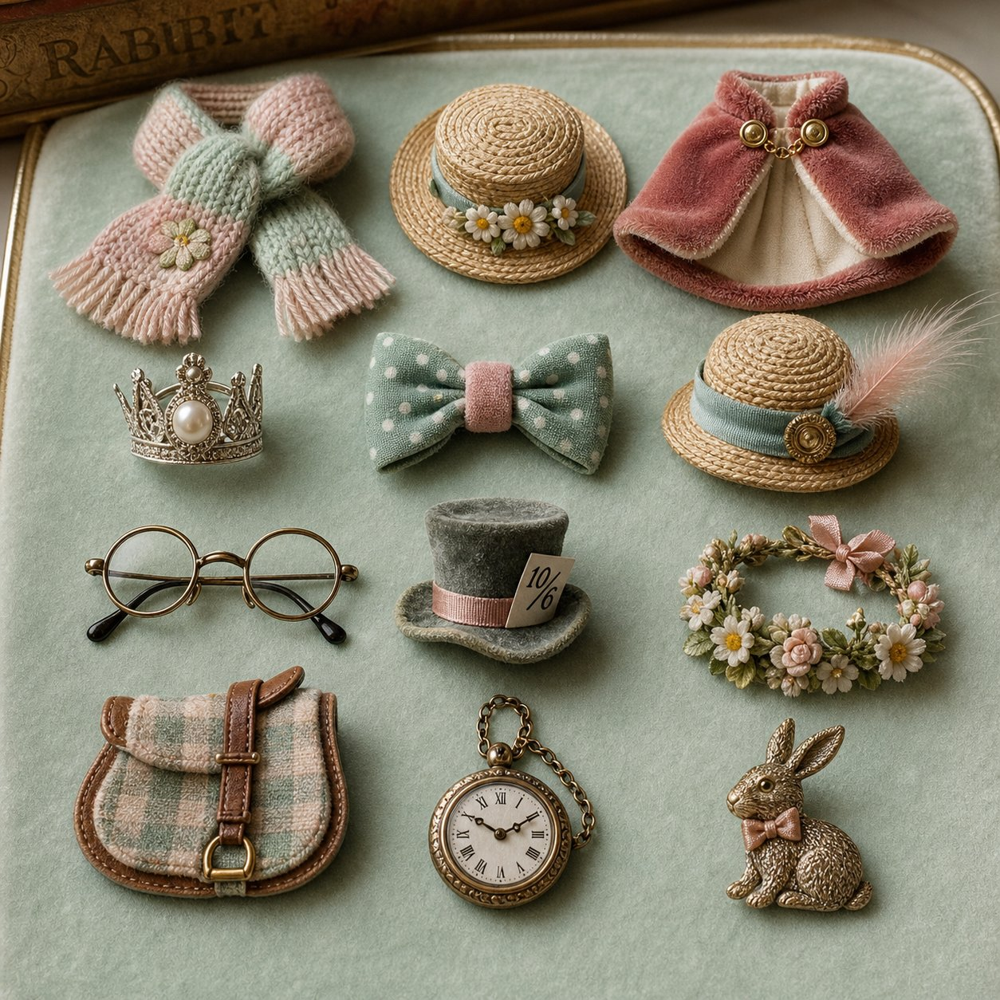
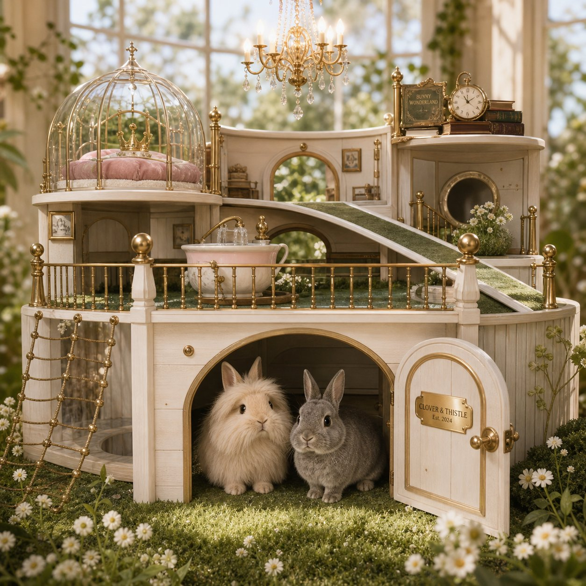
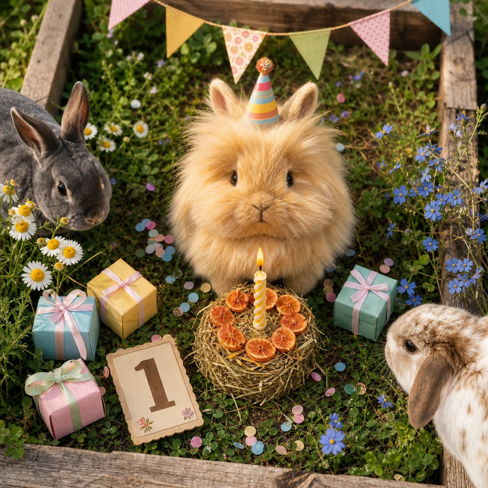

📹
Стрим 24/7
2–4 камеры на вольер, сумеречный режим, «binky-cam» сверху. ИИ фиксирует кормления, поилку, прыжки, «замирание» — и превращает это в данные о welfare, а не только в клипы.
WebRTC <1.5 сночью без звукаархив 72 ч
Warren Protocol — фиджитал-резиденция карликовых кроликов. Вы покупаете не картинку, а право заботиться о настоящем животном: смотреть в прямом эфире, кормить, выводить на прогулку, обновлять вольер, сводить по договорённости и наследовать родословную. Нельзя заминтить больше кроликов, чем есть вольеров.
RCN — внутриигровой предмет права заботы, а не долговое требование и не «собственность на животное».
В 500 $ входит только животное и его карточка; содержание — отдельный инвойс 30–60 $/мес.
Количество SOL фиксируется quoting-окном (90 с, ±1.5 %) и подтверждается оракулом в момент подписи;
маршрут оплаты — SOL → Jupiter → USDC, газ платит игрок. Покупка откроется после
публикации программы (см. «Статус»).

01 · Warren Live
Это реестр резидентов: каждое животное имеет чип, ветеринарный журнал, WelfareScore и камеру. Карточка — витрина реального состояния, а не «прогресс-бар вымышленного существа».

02 · Что можно делать
Каждое действие оставляет доказуемый след: событие в эфире, аттестацию, коллекционный клип и — главное — измеримую пользу животному.
2–4 камеры на вольер, сумеречный режим, «binky-cam» сверху. ИИ фиксирует кормления, поилку, прыжки, «замирание» — и превращает это в данные о welfare, а не только в клипы.
WebRTC <1.5 сночью без звукаархив 72 ч
От 2 $: зелень, любимое лакомство, свежая вода, прогулка 30 мин, когтепочесание. Исполнение — в течение 24 часов или авто-возврат. Имя донатера — в эфире и в метаданных.
20–90 CSLA 24 чавто-возврат
«Ремонт клетки», «вет-маршрут», «гнездо для выводка» — фиксированная смета, дедлайн, авто-возврат всем, если не собрано или не исполнено. Прогресс виден в прямом эфире.
смета 150 C+refund-if-notштраф резиденции
Клетка — не «скин», а аренда с характеристиками: площадь, укрытия, вертикаль, безопасность. Предметы ломаются (кролик их съедает), и это честный постоянный стик.
durability 1–8theme of month+3..+8 welfare
Капор, шарф, плащ, корона — всё миниатюрное, одобренное ветеринаром, носится по 20–40 минут и под присмотром. День рождения: 12 спонсорских слотов в год, торт из сена, клип-набор.
нет «вечной» носки12 слотов/годERC-1155
Binky Break, Agility Cup, Chin of the Week, Puzzle Sprint, Fluff Gauge, Hutch Design. Судейство: 40% эксперты / 40% сообщество / 20% объективные данные. Приз — в фонд кролика.
взнос 2 C70% в энддаументcommit-reveal


03 · Ответственность
Мы не прячем ежемесячные расходы в «газ» и не называем их «доходностью». Содержание — обязанность владельца, обеспеченная реальным расходом сена, а не мета-рейтом.
1 500 C / ~$30
в месяц за животное
Животное: 500 $ ≈ — SOL · уровень не меняет вход, только инвойс (⚑ Q5/Q6)
2 100 C / ~$42
в месяц за животное
Животное: 500 $ · волна 2+ = 500 $ +15 % за волну ≈ — SOL
3 000 C / ~$60
в месяц за животное
Crown-слот: sealed-bid со старта 575 $ ≈ — SOL · депозит в цену не входит
Двигайте — увидите, что «содержание» — это не абстракция, а конкретные дни сена и прогулки.
Передержка (Resident Pass) — законный способ участвовать без 12-летнего обязательства: имя на табличке, голос по декору, скидка на донаты, приоритет при освобождении слота. По модели это самый сильный финансовый рычаг проекта: упругость EBITDA к цене передержки — 9.76, к цене NFT — 0.00.

04 · Донаты
80% — в энддаумент животного (только whitelisted-вендоры), 10% — эфир и сообщество, 10% — фонд rescue-содержания. У энддаумента нет функции вывода: это свойство кода, а не обещание.


В демо-режиме кнопки не списывают средства: они показывают, как выглядит
заявка и как растёт прогресс цели. Реальный поток: USDC/SOL → DonationRouter →
MerchantGateway → фото-отчёт и аттестация в эфире.
05 · Генетика
BreedingBond — двусторонний контракт в блокчейне: срок, сплит, роялти, отказные права. Протокол берёт 30% выводка в пользу фонда содержания, а биология ограничена ончейн-лимитами.

06 · Genesis
Дефицит здесь настоящий: он ограничен площадью, штатом и вет-пропускной способностью резиденции. Поэтому минт идёт волнами, строго под построенные слоты, а очередь вольеров — публичный счётчик в контракте.
Вайтлист = волна 0 по 375 $ (−25 % от волны 1); дальше каждая волна +15 %. Никаких «ранних минтов за 3 друга».

Пилот: 6 кроликов, 4 камеры, ручной welfare-журнал. 8 недель без инцидента — иначе проект не запускается.
готовоПомещение, лицензии, вольеры 3×2×1, вет-партнёр 24/7, CapacityProof опубликован.
RCN на Solana, 24/7 эфиры, донаты и цели, CareEngine, welfare-дашборд.
Q1Маркетплейс, BreedingBond, Litter/KitShare, роялти-движок, ROFR.
Q2Burn-and-mint, конкурсы, Carrot Pass, косметика, передержка.
Q307 · Честно
Мы отвечаем до покупки, а не в тикетах после.
simulate.py)17 вопросов закрыты · решения владельца 2026-10-10
Зафиксировано в коде (CFG в app.js), в спецификации и в текстах витрины.
Всё, что осталось открытым, помечено ⚠.
Стек переписывается с Base / ERC-4337 / EIP-7702 на Solana: Anchor-программа, PDA-реестры, газ ≈ 0.000005 SOL. Solidity-эскизы остаются спецификацией механик, не кодом деплоя.
Transfer-fee зашита в сам токен, поэтому «комиссия заботы» не отключаема голосованием, а вывод энддаумента владельцу невозможен на уровне мяты.
Карточка животного — сжатый NFT + Metaplex attachment для genotype и доказательств заботы: 888 карточек без боли по стоимости, показ в кошельках через Metaplex.
Не долговое требование и не ценная бумага — предмет права заботы. Формулировки «право требования» убраны с витрины и из FAQ.
Депозит на 12 месяцев в цену не входит. Содержание — отдельный месячный инвойс: Burrow 30 / Warren 42 / Crown 60 $.
Волна 0 для вайтлиста — 375 $ (−25 %), далее +15 % за волну, Crown — sealed-bid со старта 575 $.
90 секунд, допуск ±1.5 %, подтверждение оракулом в момент подписи. На витрине работает то же окно с обратным отсчётом и кнопкой пересчёта.
Никаких субсидий и paymaster-абстракций: каждая подпись ≈ 0.000005 SOL за счёт владельца карточки.
SOL → Jupiter → USDC → DonationRouter. Протокол не держит SOL-обязательство; конверсия — событие пользователя.
Юрлицо, адрес и лицензии на витрине не упоминаются; покупка закрыта до публикации условий участия.
⚠ Открыто: гейт появится вместе с платёжным провайдером и юрлицом. Сейчас — вайтлист по email без верификации.
Деньги и права ончейн; кормление, вес и welfare — офчейн с Merkle-пруфом раз в сутки и 3 подписями оракула из 5.
Ветеринарные стандарты содержания позволяют камеры 24/7 без звука и «тихий час»; риск ограничения не перекладывается на зрителя.
Продажа «в никуда» не идёт: при длительном CareDebt права переходят на баланс разработчиков, животное остаётся в своём вольере и bonded-группе.
При продаже RCN расчёт идёт во внутреннем токене по рыночному курсу; выкуп за USDC/SOL обязательством протокола не является.
Пустая вязка не возвращает депозит Bond — он уходит в фонд содержания; 30 % начисляются только живым зарегистрированным крольчатам.
888 животных = 888 карточек. Обязательное парное/групповое содержание остаётся правилом вольера, а не правилом владения.
Единица $CLOVER: 0.02 $ на витрине против 0.05 $ в docs/05 — при выравнивании калькулятор пересчитается на +150 %. CareDeposit как продукт больше не продаётся, но как механизм залегает в модель.
Обоснование, варианты и следствия каждого решения —
landing/QUESTIONS.md → Q1–Q17.